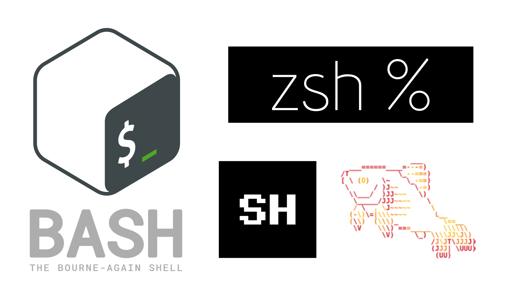

# Ejemplo clásico de filosofía Unix
grep "^>" secuencias.fasta | sort | uniq -c | sort -nr3 Filosofía Unix & Bash
Este módulo abacara una introducción a lo que es Unix, Shell y Bash, así como, consejos para trabajar en línea de comandos.
3.1 ¿Por qué Unix?
3.1.1 Origen e Historia
- 1969: Sistema operativo desarrollodo inicialmente en AT&T Bell Labs (Ken Thompson, Dennis Ritchie)
- 1973: Reescribido en C, permitiendo portabilidad
- Evolución: BSD, System V, GNU/Linux, macOS

3.1.2 Filosofía Unix
- Principio de modularidad: Programas pequeños que hacen una cosa bien
- Composición: Conectar programas mediante pipes (
|) - Texto como interfaz universal: Formatos de texto plano para entrada/salida
- Ocultar complejidad: Interfaces simples que ocultan implementaciones complejas
- Principio KISS: “Keep It Simple, Stupid”
3.2 ¿Por qué Shell?
3.2.1 El shell como entorno de trabajo
- Interfaz fundamental: Acceso directo al sistema operativo
- Automatización: Scripting para tareas repetitivas
- Portabilidad: Disponible en prácticamente todos los sistemas Unix-like
3.2.2 Ventajas de Bash
- Ubicuidad: Shell por defecto en la mayoría de distribuciones Linux
- Potencia: Completo lenguaje de scripting
- Personalización:
.bashrc, aliases, funciones - Compatibilidad: Mejorado sobre sh tradicional

3.3 Principios básicos y ventajas
3.3.1 Principios fundamentales
| Principio | Descripción | Ejemplo |
|---|---|---|
| Everything is a file | Dispositivos, procesos, sockets como archivos | /dev, /proc |
| Small is beautiful | Programas pequeños y especializados | grep, awk, sed |
| Filter pattern | Programas que procesan entrada y producen salida | cat file | sort |
| Preferir texto | Texto plano como formato universal | logs, configs |
| Rule of Silence | No generar output innecesario | -q/--quiet |
3.3.2 Ventajas clave
Eficiencia
# Procesamiento eficiente de datos
awk 'NR % 4 == 1' archivo.fastq | sort | cut -c2- | sort | uniq -c | sort -rn | head -20Automatización
# Backup automatizado
tar -czf resultados_alineamiento_$(date +%Y%m%d).tar.gz resultados/*.sam && scp resultados_*.tar.gz usuario@servidor:~Portabilidad
# Script que funciona en múltiples sistemas
#!/usr/bin/env bashExtensibilidad
# Crear comandos personalizados
alias ll='ls -alF'3.3.3 Referencias rápidas en bash
- Ctrl+C: Interrumpir comando
- Ctrl+L: Limpiar pantalla
- Ctrl+A: Ir al inicio de línea
- Ctrl+E: Ir al final de línea
- Ctrl+U: Borrar hasta inicio de línea
- Ctrl+K: Borrar hasta final de línea
3.4 Casos de estudio
3.4.1 Pipeline clásico
# Analizar archivo FASTQ para obtener lecturas con baja calidad
seqkit fx2tab -q -n -i reads.fastq | awk '$2 < 30' | sort | uniq -c | sort -nr | head -103.4.2 One-liners
# Buscar archivos FASTQ y comprimirlos
find . -name "*.fastq" -exec gzip {} \; | xargs -I{} echo "Comprimido: {}"
# Monitorizar uso de memoria durante alineamiento
watch -n 1 'ps -C bwa -o %mem,%cpu,cmd'3.5 Buenas Prácticas
3.5.1 Scripting robusto
#!/usr/bin/env bash
set -euo pipefail # Falla ante cualquier error
IFS=$'\n\t' # Maneja nombres con espacios
# Validar argumentos de entrada
if [[ $# -ne 2 ]]; then
echo "Uso: ${0##*/} <input.fastq> <genoma_referencia.fa>" >&2
exit 1
fi
# Procesamiento seguro de muestras
echo ">>> Alineando ${1} contra ${2}..."
bwa mem -t 4 "$2" "$1" | samtools view -bS - > aligned.bam
# Control de calidad del alineamiento
samtools flagstat aligned.bam > alignment_stats.txt
echo ">>> Resultados guardados en alignment_stats.txt"3.5.2 Versión extendida con más controles
#!/usr/bin/env bash
set -euo pipefail
IFS=$'\n\t'
# Configuración sensible para datos biológicos
REF_GENOME="/data/genomes/hg38.fa"
THREADS=8
MIN_QUALITY=20
# Validación de entradas
required_tools=("bwa" "samtools" "seqkit")
for tool in "${required_tools[@]}"; do
if ! command -v "$tool" &> /dev/null; then
echo "ERROR: $tool no está instalado" >&2
exit 1
fi
done
# Procesamiento pipeline
process_sample() {
local input_fastq="$1"
local sample_name=$(basename "$input_fastq" .fastq)
echo ">>> Procesando muestra: $sample_name"
seqkit stats "$input_fastq" > "${sample_name}_qc.txt"
bwa mem -t "$THREADS" "$REF_GENOME" "$input_fastq" \
| samtools view -b -q "$MIN_QUALITY" - \
| samtools sort -o "${sample_name}.sorted.bam"
samtools index "${sample_name}.sorted.bam"
}
# Ejecución principal
process_sample "$@"3.5.3 Consejos para usuarios
- Aprender expresiones regulares:
grep -E,sed -E - Dominar redirecciones:
>,>>,2>,&> - Usar
man: Documentación completa (man bash,man grep) - Explorar herramientas estándar:
awk,sed,cut,tr - Versionar scripts: Usar Git incluso para scripts pequeños
3.6 Recursos adicionales
- Libros:
- “The Unix Programming Environment” (Kernighan & Pike)
- “Bash Guide for Beginners” (Machtelt Garrels)
- En línea:
- Práctica: